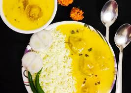

Kadi Chawal Recipe.

It fills your stomach to the brim and is my one of the best lunch recipe. I often go to bhandaras and only eat Kadi Chawal.
It is also very easy and pocket friendly no rocket science.
Ingredients
For Curd Slurry
- 1.5 cups sour curd
- 3 cups water
- 1/2 teaspoon red chilli powder (lal mirch powder)
- 1/2 teaspoon turmeric powder (haldi)
- 1/2 teaspoon Garam Masala
- 1 generous pinch asafoetida(hing)
- 1 to 1.5 teaspoon salt
- 8 tablespoon gram flour (besan)
For Onion Pakora
I like besan pakoras better than this YOUR CHOICE!
- 1 cup thinly sliced onions (2 medium sized pyaaz)
- 1 cup besan
- 1/2 teaspoon red chilli powder
- 1/2 teaspoon garam masala
- 1/2 teaspoon ajwain
- add generous amount of salt (don't be shy)
- 1/4 cup water
- sarso ka tel (oil)
For Kadhi (YUM YUM)
- Onions
- chopped ginger
- chopped garlic
- methi seeds
- green chillies (2 from your khet)
- 2 dry red chillies (don't remove the seeds)
- 1 teaspoon cumin seeds
- hing
- sarso ka oil
Steps (Instructions)
Making Curd Slurry
- In a bowl take the sour curd and whisk it well till smooth
- Add gram flour, red chilli powder, turmeric powder, garam masala powder and salt to the whisked curd.
- Stir and mix everything again.
- Add 3 cups water and stir again.
- Stir very well to make a smooth mixture without lumps. If there are lumps, then break them with a wired whisk or a spatula or with your fingers. Set the curd slurry aside.
- You can use a blender to make this mixture, but make sure you don’t over do it. You will get butter instead of a smooth blended curd.
Making Pakora for Kadhi
- Take the gram flour in a bowl and add carom seeds, red chili powder, garam masala powder and salt.
- Add 1 cup thinly sliced onions.
- Mix everything well and set aside covered for 30 minutes.
- This will allow the onions to release their water in the mixture. Depending on the water content in the onions, the mixture will become very moist or just about moist.
- Then accordingly add water as required to make a thick batter. I added ¼ cup water.
- Heat oil for deep frying in a pan or kadai. Let the oil become medium hot. Then with a spoon carefully drop the pakora batter in the oil.
- When the pakora are partly cooked, then turn over and fry the other side.
- Fry till the pakora are crisp and golden.
- Remove the fried pakora and place them on a kitchen paper towel so that extra oil is absorbed. Fry the pakora in batches this way. When done set all of them aside.
Making Kadhi
- In another pan or kadai, heat mustard oil. Make sure to use a large bottomed pot so that while boiling, the kadhi does not spill.
- Add the cumin seeds, fenugreek seeds and asafoetida. Allow the cumin seeds to crackle and the fenugreek seeds to change their color. Fry on a low flame, so that these spices do not get burnt.
- Add chopped onions. Stir and sauté for 3 minutes on a low to medium-low heat.
- Then add chopped ginger, chopped garlic and chopped green chillies. Stir and sauté for a minute.
- Now add curry leaves, dry red chilies (halved or broken and seeds removed). Stir and sauté for a minute on a low flame.
- Then add the curd slurry.
- Stir very well.
- Increase the flame to medium and bring the kadhi to a boil. Keep on stirring often so that the bottom does not get browned. Time taken to cook kadhi will be around 14 to 16 minutes.
- After the kadhi has come to a boil, then lower the heat and simmer for more 6 to 7 minutes. The kadhi will thicken.
- If the kadhi becomes too thick, then add some hot water.
Home